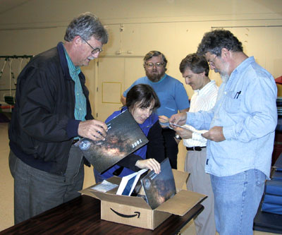
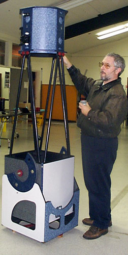
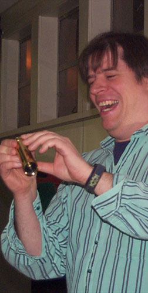

A quintet of SJAA board members look through the box of publication goodies available for members at the December meeting and holiday social event. From left to right, Jim Bartolini, Akkana Peck, Bill O'Shaughnessy, Gary Mitchell, and Bill Arnett. Photo by Mark Taylor.
|

Ephemeris co-editor Morris Jones sets up his new 14.5" f/4.8 LITEBOX truss dobsonian at the SJAA holiday party. Photo by Jane Houston Jones. |

VP and loaner chairman Mike Koop examines a new spyglass scope found in the "white elephant" gift exchange at the holiday party. Photo by Jane Houston Jones. |